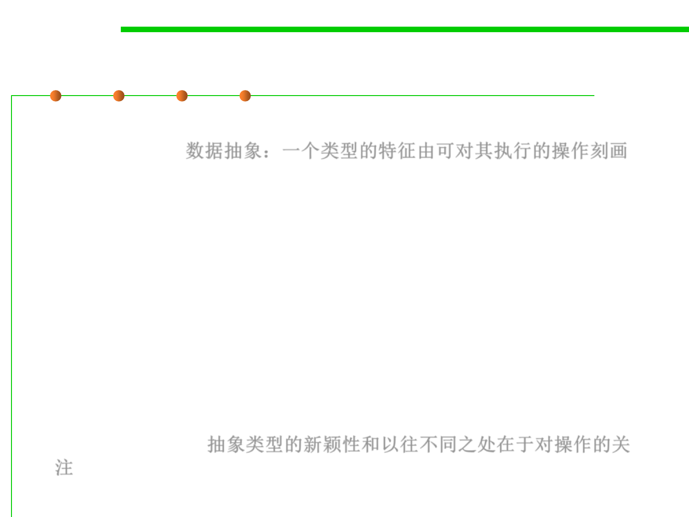

Data Abstraction
3.3 Abstract Data Type (ADT)
▪ Data abstraction: a type is characterized by the operations you can
perform on it. 数据抽象：一个类型的特征由可对其执行的操作刻画
– A number is something you can add and multiply;
– A string is something you can concatenate(连接) and take substrings of;
– A boolean is something you can negate(取反), and so on.
▪ In a sense, users could already define their own types in early
programming languages: you could create a record type date, for
example, with integer fields for day, month, and year.
▪ But what made abstract types new and different was the focus on
operations: the user of the type would not need to worry about how
its values were actually stored, in the same way that a programmer
can ignore how the compiler actually stores integers. All that matters
is the operations. 抽象类型的新颖性和以往不同之处在于对操作的关
注